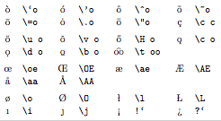

Character Conversion Character Conversion
Character Conversion Character ConversionBibDesk automatically converts many accented characters into their
TeXequivalents when it writes a BibTeX file. For instance, a u
with umlaut
is converted to {\"u} when your file is saved, but presented as-is in
theinterface. There are some limitations on this process;
conversion only works when a {\ sequence is encountered, as in the
above example, and it only works if BibDesk has the conversion stored
in its internal dictionary.
The following table was taken from The
Not So Short Introduction to LaTeX2e> (Oetiker et al., 1999).
Depending on your TeX distribution, it may be available at
/usr/local/teTeX/share/texmf.tetex/doc/latex/general/lshort.dvi,
or it is available from CTAN.
Many of the accents listed in this table can be applied to characters other than o, as well.

Note: for BibTeX, it is also necessary to enclose the accent sequence in braces (see the TeX FAQ).